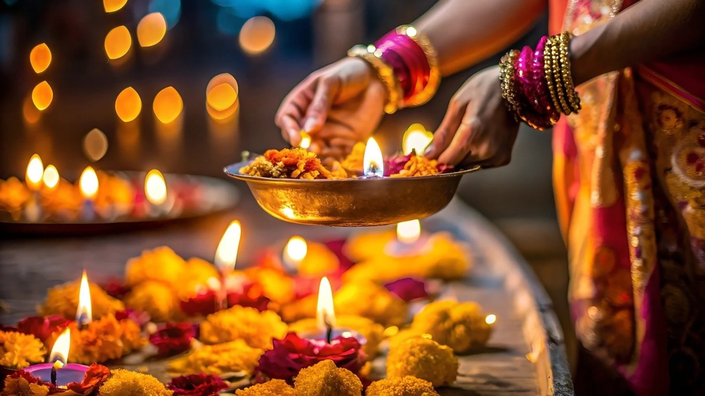
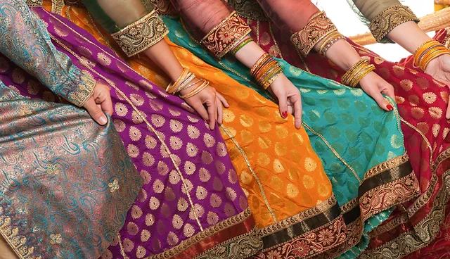

Indian Culture
Discover the rich and diverse culture of India, a land of unity in diversity.
- Diwali: Festival of lights, symbolizing the victory of light over darkness
- Holi: Festival of Colors, celebrating love and the arrival of spring
- Eid: Festival of Harmony, marked by prayers, feasts, and charity.
- Christmas: Festival of Joy, celebrating the birth of Jesus Christ.

Diwali - The Festival of Lights
Langauages
India is a linguistic treasure trove with 22 offcially recognized langauges and thousands of regional dialets:
Popular Langauges in India
| Langauge |
Region |
| Hindi |
North India |
| Bengali |
West Bengal |
| Tamil |
Tamil Nadu |
| Telgu |
Andhra Pradesh |
⭆Fun fact
Traditonal Attire
Indian traditional clothing varies by region, showcasing its cultural diversity:
- Saree:Elegant drape worn by women across India.
- Kurta-Pajama: Comfortable attire for men, popular in the north.
- Lehenga: A festive outfit for women. especially in weddings.
- Dhoti: Traditional men's wear in southern and eastern India.

Traditional Saree - Grace and Elegance